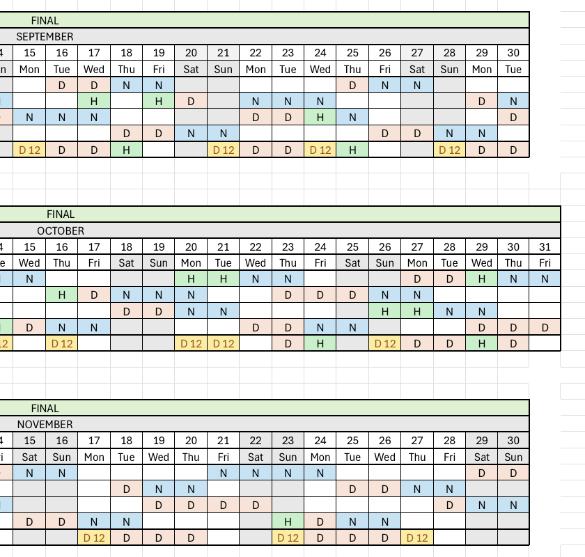
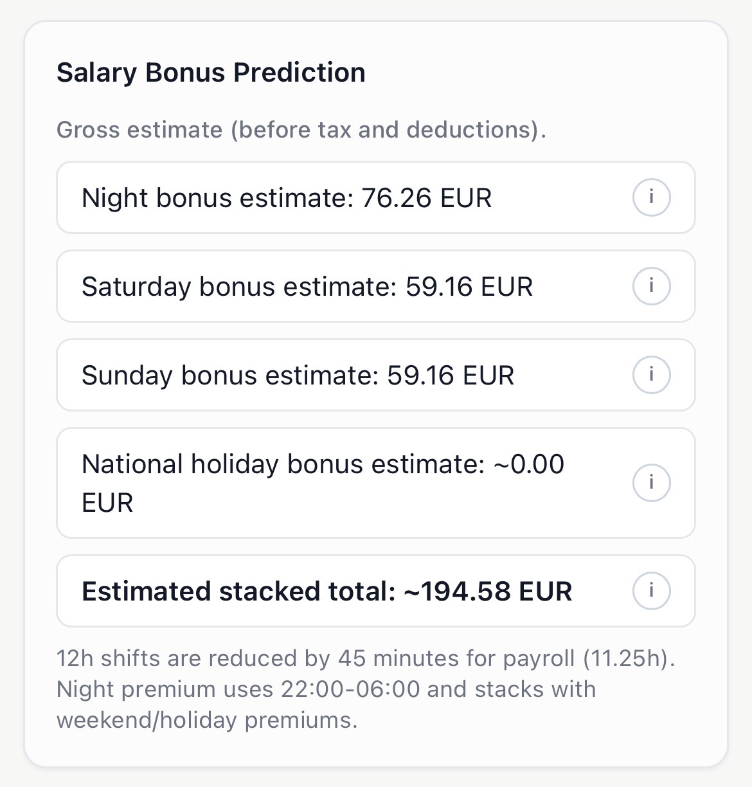
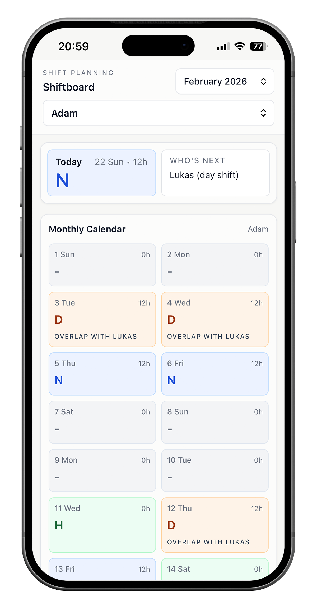
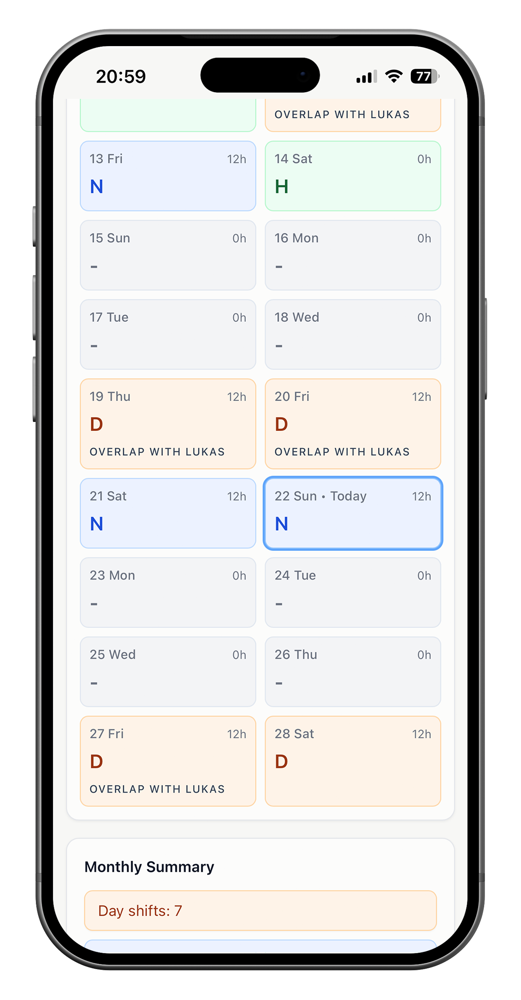
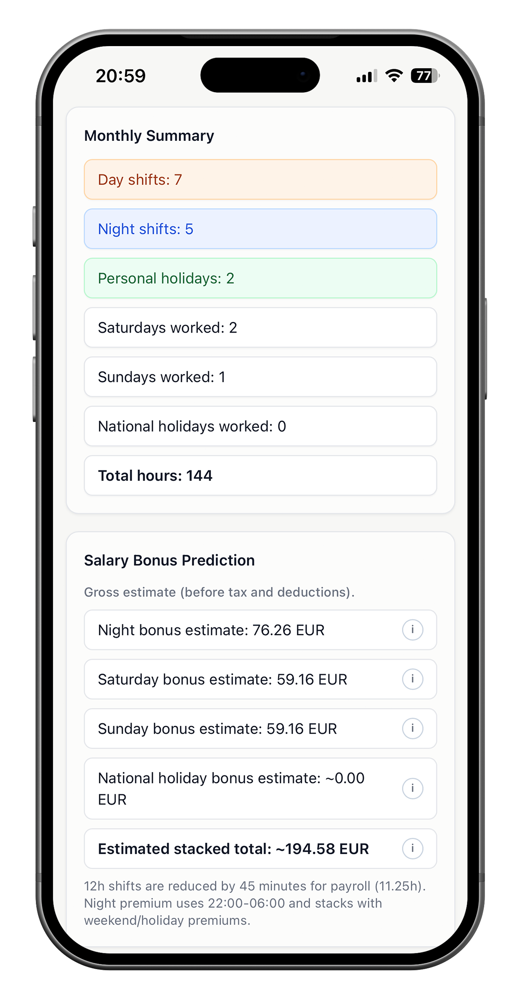
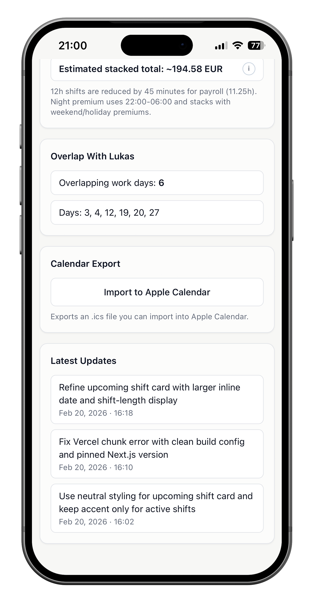

Shiftboard
Shiftboard is a lightweight web app designed for a 24/7 IT support team working 12-hour rotating shifts. It replaces a static Excel schedule with a clean, calendar-based interface where each team member can instantly view their monthly shifts, including day, night, holiday, and sick leave.

Problem context
- 24/7 IT team working 12-hour rotating shifts.
- Monthly schedule distributed via Excel.
- Friction: hard to scan, not mobile-friendly, requires opening a file every time.
- No quick personal view, users mentally filter the sheet for their own name, easy to get lost.


Turning operational data into financial insight
Instead of just showing when someone works, the app clarifies how schedule patterns affect earnings, increasing transparency and perceived fairness.
Designing within real-world constraints
The schedule is still created externally in Excel. Rather than redesigning the entire workflow, the product integrates seamlessly via CSV import.
- Working within operational constraints
- Lightweight architecture (no backend required)
- Solving the right problem instead of overbuilding



